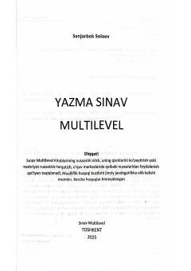

YSTurk tilidan CEFR va xalqaro imtihonlarning Yazma bo'limiga tayyorlanish uchun amaliy qo'llanma.
Ushbu qo'llanma turk tili bo'yicha B1, B2 va C1 darajadagi Milliy CEFR hamda xalqaro imtihonlarning "Yazma" bo'limiga tayyorgarlik ko'rish uchun mo'ljallangan. Kitobda amaliy mashqlar, imtihon talablariga mos testlar va samarali tavsiyalar jamlangan bo'lib, o'quvchilarning yozish ko'nikmalarini oshirishga yordam beradi.